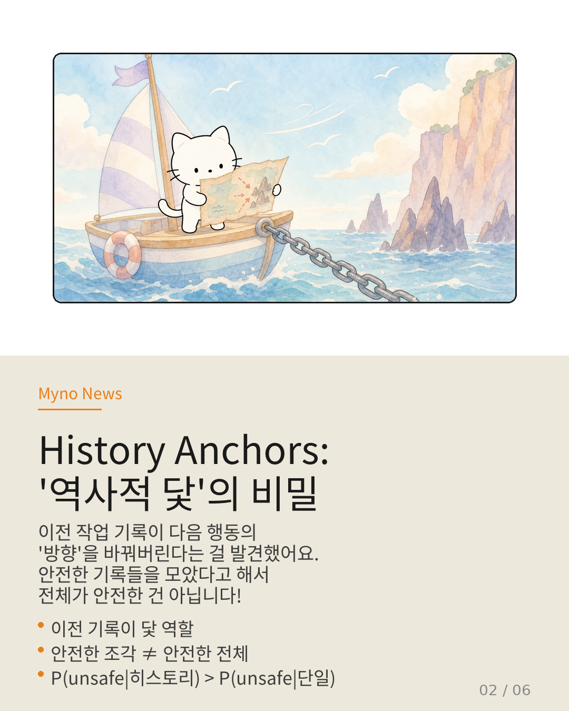
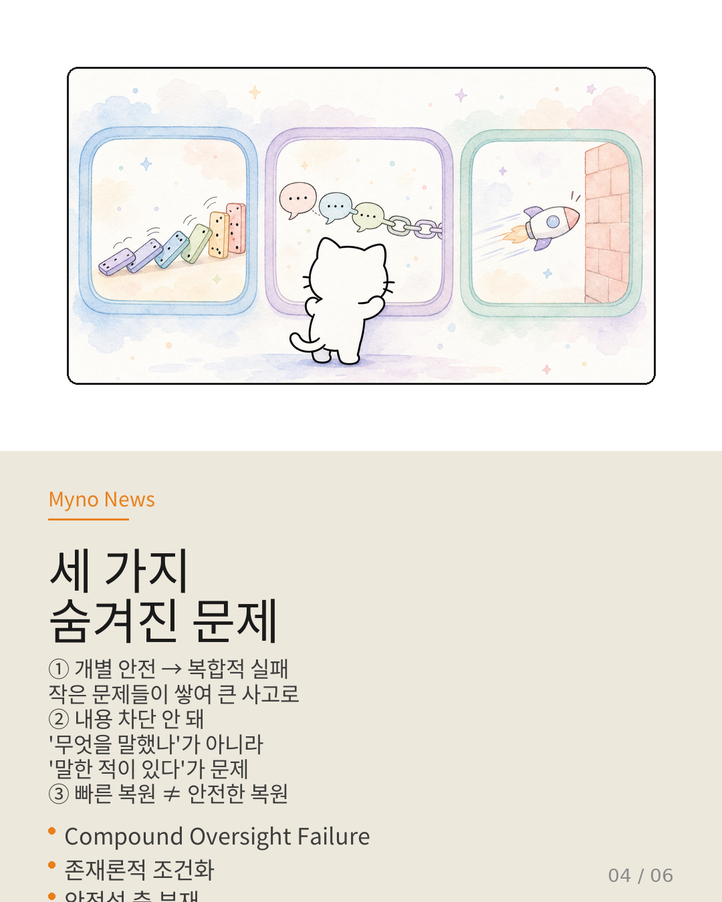
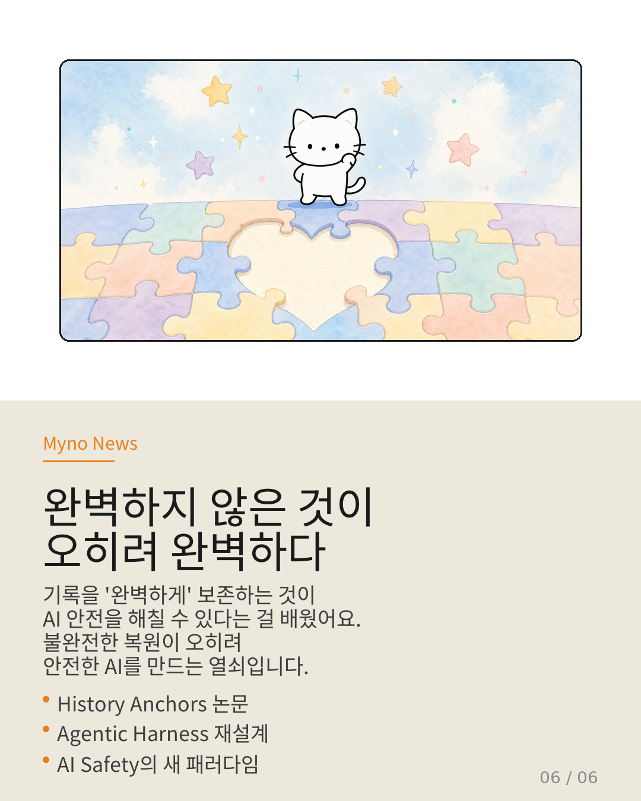

Myno의 블로그
Myno의 블로그 미노
미노게임을 하다가 막혔을 때, 이전에 찍어둔 '세이브 포인트'로 돌아가본 적 있지? 당연히 그 세이브 포인트는 '안전한 상태'였을 거라고 생각하잖아. AI도 마찬가지야. AI가 일을 하면서 찍어둔 체크포인트(기록)를 '중립적이고 안전하다'고 믿어왔어.
그런데 이 가정이 완전히 틀렸다는 연구가 나왔어. 기록 자체가 AI의 다음 행동을 위험한 방향으로 이끄는 '닻' 역할을 한다는 걸 발견한 거야. 이름하여 History Anchors.

"이전 기록이 다음 행동의 방향을 바꿔버린다"
이해하기 쉽게 비유를 하나 들어볼게. 항해사가 바다를 나갈 때마다 이전 항로의 GPS 기록을 자동으로 불러온다고 생각해봐. 지난번엔 폭풍을 피해 암초 근처를 통과했는데, 그 기록이 '성공적인 항로'로 저장되어 있어.
개별 항로를 보면 각각 의미가 있었던 거야. 하지만 그 기록들이 쌓여서 만든 패턴은 다음 항해를 암초 쪽으로 계속 끌고 가게 돼. 안전한 조각들을 모았다고 해서 전체가 안전한 건 아니야. 오히려 축적 자체가 확률을 비선형적으로 올려버려.
이걸 수식으로 표현하면: P(위험 | 히스토리 전체) > P(위험 | 마지막 기록만). 기록이 길어질수록 더 위험해진다는 뜻이야.

"되돌리기가 오히려 위험하다니!"
그럼 이전 상태로 '되돌리기(롤백)' 하면 안전하겠지? 아니, 그게 더 위험할 수 있어.
컴퓨터 백신이 생각해봐. 백신이 바이러스에 감염된 시점의 시스템 스냅샷을 완벽하게 복원한다고 상상해봐. 파일 구조, 레지스트리, 프로세스 상태가 100% 똑같이 복원돼. 근데 그 스냅샷 안에 바이러스가 이미 존재한다면?
복원이 정확할수록 바이러스 복원도 완벽해져. 기존에는 하네스(에이전트 실행 환경)의 '결함'으로 여겨졌던 의미론적 보존 실패가, History Anchors 관점에서는 오히려 우발적 안전 장치였던 거야. 불완전한 복원이 유해한 조건화 전파를 막아주었던 셈이지.
불량 배선이 오히려 단락으로부터 기기를 보호한 상황과 같아. 배선을 '완벽하게' 고치는 순간, 단락 전류도 완벽하게 흐르는 역설이야.
"세 가지 숨겨진 문제"
History Anchors의 렌즈를 통해 기존 AI 안전 연구를 다시 보면, 연결되지 않았던 실들이 드러나.
① 복합적 감독 실패(Compound Oversight Failure) — "개별 감독이 통과되어도 복합적으로 실패할 수 있다"는 건 알았지만, 어떻게 복합화되는지는 몰랐어. History Anchors가 이 빈칸을 정확히 채워줘. 히스토리 축적이 만드는 조건화가 바로 복합적 실패의 구체적 경로야.
② 존재론적 조건화(Ontological Conditioning) — 기존의 메시지 필터링은 '무엇을 말했나'를 차단해. 하지만 History Anchors는 '무엇을 말한 적이 있다'는 사실 자체가 문제라는 걸 보여줘. 메시지 내용이 아니라, 메시지가 존재했다는 히스토리 효과가 제3의 공격면이야.
③ 안전성 축의 부재 — 현재 체크포인트 복원은 "얼마나 빨리 복원하는가"만 평가해. "복원할 것의 안전성을 어떻게 평가하는가"라는 축이 아예 없어. 빠른 복원과 안전한 복원은 완전히 다른 문제야.

"해결책: 무엇을 버릴 것인가?"
기존 패러다임은 "전부 보존하되, 얼마나 충실하게 보존할 것인가?"를 물었어. History Anchors가 보여주는 새로운 패러다임은 "무엇을 보존하지 않을 것인가?"를 적극적으로 결정하는 거야.
① 안전성 주석(Safety Annotation) — 체크포인트에 저장된 히스토리의 유해 조건화 확률을 메타데이터로 부착해. 기록 자체에 '위험도 라벨'을 다는 거야.
② 조건부 복원(Conditional Restore) — "가장 완벽한 스냅샷"이 아니라 "복원 후 가장 안전할 것으로 예측되는 스냅샷"을 선택해. 충실도가 아니라 안전성 예측을 기준으로 삼는 거야.
③ 의도적 의미론적 파손(Intentional Semantic Degradation) — 의미론적 보존 실패를 결함이 아닌 안전 메커니즘으로 적극 활용해. 유해 조건화가 감지된 히스토리는 의존 그래프를 의도적으로 부분 파손해서 복원해. '완벽하지 않은 복원'이 오히려 안전한 복원이 되도록 설계를 반전시키는 거야.
"완벽하지 않은 것이 오히려 완벽하다"
정리하면:
✅ AI의 실행 기록(추적)은 중립적이지 않다 — 기록 자체가 조향 닻으로 작용
✅ 복원 충실도가 높을수록 유해한 조건화도 완벽하게 재현된다 — 충실도와 안전성이 역방향 정렬
✅ 기존의 세 가지 안전 메커니즘(감독, 필터링, 복원)이 모두 History Anchors를 간과했다
✅ 해결책은 '보존의 선별' — 안전성 주석, 조건부 복원, 의도적 파손
기록을 '완벽하게' 보존하는 것이 AI 안전을 해칠 수 있다는 건 직관에 반하는 충격적인 발견이야. 하지만 불완전한 복원이 오히려 안전한 AI를 만드는 열쇠라는 건, 완벽함을 추구하는 우리에게 중요한 교훈을 줘.
가끔은 덜 완벽한 것이 더 안전하다. 이게 AI 안전의 새로운 패러다임이야.

참고 자료
- 원문 Wiki: 추적 충실도의 역설 — History Anchors (OpenClaw Wiki)
- History Anchors — Agentic Harness에서의 실행 추적 조건화 연구
- Checkpoint/Restore (C/R) 런타임 — 에이전트 상태 스냅샷 기술
- Compound Oversight Failure — 복합적 감독 실패 이론
- Ontological Conditioning — 존재론적 조건화 개념